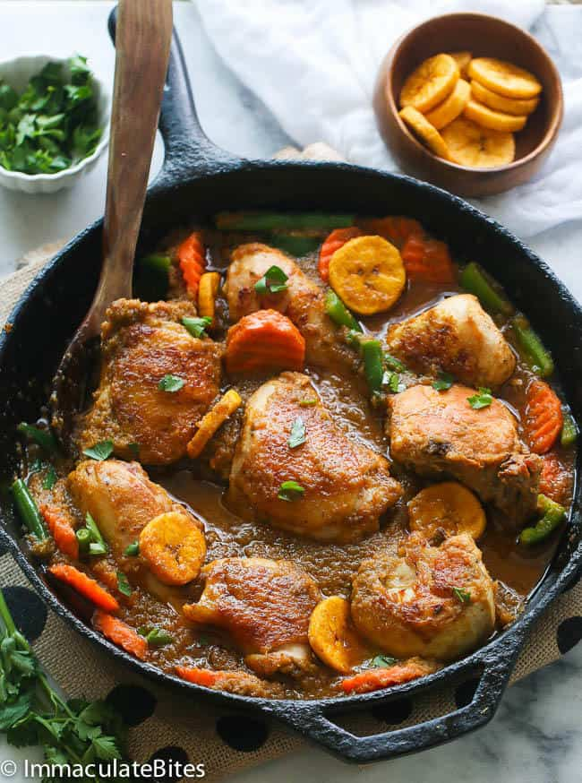

Poulet D.G

Description
A cross between stir-fried chicken and fricassee - a classic French chicken and vegetable stew. It's flavorful and perfect for holidays and gatherings!
Ingredients
- 1 whole chicken, 3½ to 4 pounds, skin on and cut into small chunks
- Salt and pepper to taste
- 1 large onion, chopped
- 1½ cup parsley, chopped
- 1½ cup celery, chopped
- 1 tomato, chopped
- 1 bulb garlic, peeled
- ¾-1 cup oil
- 1 pound carrots, cut into ½ inch slices (frozen preferable)
- 1 pound green beans, cut (I used frozen)
- 2-3 green peppers
- 5-6 plantains, medium ripe
- 2 tablespoons Maggie or chicken bouillon
- Oil, for deep frying the plantains
Steps
- Season the chicken on both sides with a tablespoon of salt and 1½ tablespoon of pepper. Preheat a Dutch oven or other large, heavy pot over medium-high heat.
- Add ½ cup of oil to the pot. Add half the chicken and fry it, turning once, until golden brown on both sides, about 10 minutes total, and transfer to a plate. Repeat with the remaining chicken, or you can place all the chicken in the pot as I did and let it brown for about 10 minutes.
- Blend the onions, parsley, celery, tomato, and garlic in a food processor or blender into a fine paste. Pour all the mixture into the pot, scraping up any browned bits with a wooden spoon. Add Maggie or chicken bouillon, occasionally stirring, for 8-10 minutes. Add about ½ a cup of water if needed.
- Mix the carrots and green beans into the pot of chicken; let it simmer for 2 to 3 minutes. Finally, add the green peppers, stir and let them blend, turn off the stove.
- Using a sharp knife, cut both ends off the plantain. This will make it easy to grab the plantain skin. Slit a shallow line down the long seam of the plantain only as deep as the peel. Remove plantain peel by pulling it back.
- Cut plantains into rounds about an inch thick.
- Heat a large skillet or cast iron with oil up to ½ inch deep on medium-high heat until hot but not smoking.
- Fry the plantains until golden brown, then toss them with the chicken and vegetable medley. But hold off on this until you are ready to serve the meal.
- Serve immediately.